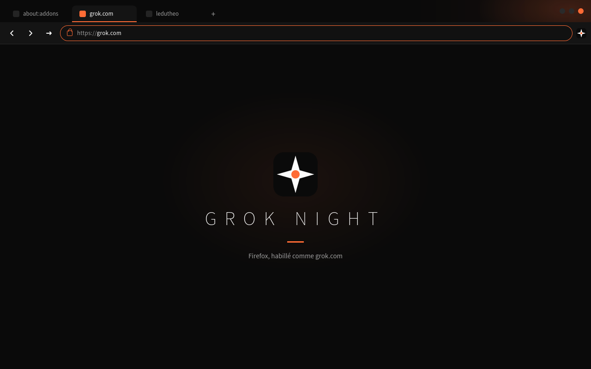
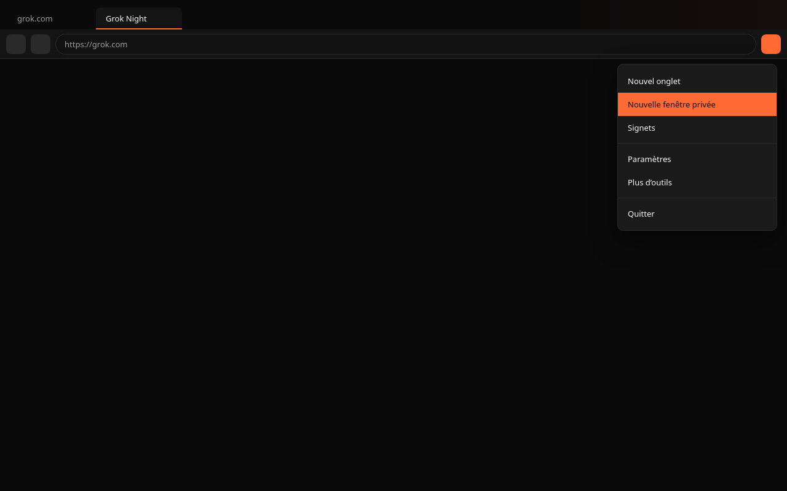

Installer
about:debugging#/runtime/this-firefox- Charger un module temporaire
- choisir
theme/manifest.jsondu dépôt
Palette
void #0A0A0A
chrome #141414
text #FCFCFC
dim #9E9E9E
accent #FF6B35
39 couleurs chrome, header, dark_theme, desktop + Fennec.
Un thème statique s’arrête aux couleurs — le plafond est dans beyond/
(horloge, experiment, userChrome).